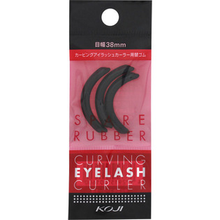

返回列表
产品名称：カービングアイラッシュカーラー スペアラバー

コージー本舗 カービングアイラッシュカーラー スペアラバー ＿
メーカー コージー本舗
JANコード 4972915001600
商品の特徴
目幅３８ｍｍ
◎コージー カービングアイラッシュカーラー専用の替ゴムです。
◎ゴムの中央に入った２本ラインで、アイラッシュカーラーのフレームがあたる位置を簡単に確認できます。
成分・分量
用法及び用量
＜使用方法＞
替ゴムが入る溝にしっかりと差し込み、全体を押さえてください。